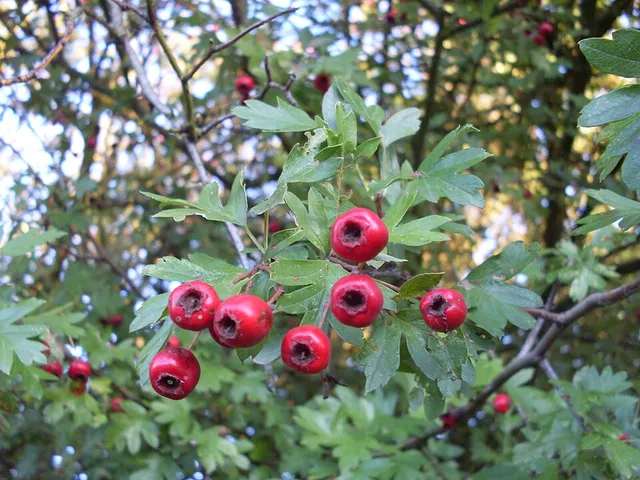

Hawthorn
Hawthorn is a wild fruit you can forage from September to October in British Columbia, Prairies, Ontario, Quebec and Atlantic Canada. Thorny hedge tree with lobed leaves, white May blossom and clusters of dark red haws.

When is hawthorn in season in Canada?
Hawthorn is usually in season September to October. Timing shifts with weather, latitude and altitude.
Where does hawthorn grow in Canada?
Hawthorn grows in Alberta, British Columbia, Manitoba, New Brunswick, Newfoundland and Labrador, Nova Scotia, Ontario, Prince Edward Island, Quebec, Saskatchewan. Regions: British Columbia, Prairies, Ontario, Quebec, Atlantic Canada.
How do you recognise hawthorn?
Thorny hedge tree with lobed leaves, white May blossom and clusters of dark red haws.
How do you harvest hawthorn?
Strip dark red haws in autumn; young leaves can be picked in spring.
How do you eat hawthorn?
Haws in ketchup, jelly or fruit leather; young leaves raw.
How do you store hawthorn?
Jelly or leather.